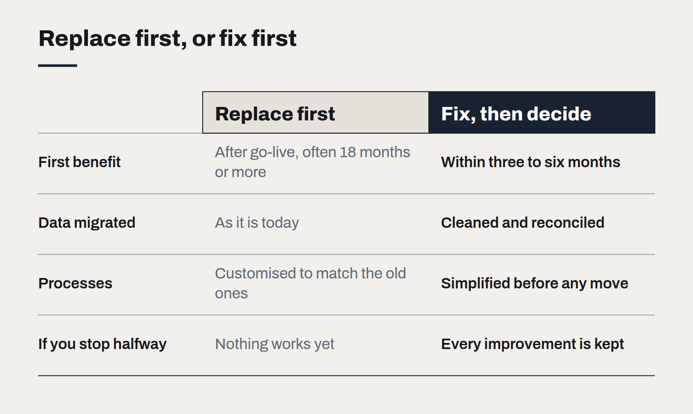

The case against replacing your ERP
Most integration pain is process pain wearing a technical costume. How to tell the difference before committing to a migration.

Sooner or later, every growing business reaches the meeting where someone says the ERP has to go. Month-end takes two weeks. Nobody trusts the stock figures. Every new sales channel needs a developer and a spreadsheet to connect. The system is old, the vendor is slow, and a shiny cloud replacement is only eighteen months away.
Sometimes replacement is the right call. More often, in our experience, it is an expensive way to move the same problems onto a new platform. Before signing, it is worth finding out which kind of problem you actually have.
Symptoms that look technical but are not
Many complaints about ERP systems are really complaints about how the business uses them.
- "The numbers don't match." Usually two teams entering the same thing in different places, or a product code structure that was never cleaned up. A new system imports the same mess.
- "Month-end takes forever." Often a sequence of manual reconciliations that exist because upstream data arrives late or wrong. The ERP is where the pain is felt, not where it starts.
- "We can't connect anything." Frequently a lack of an integration layer, not a lack of APIs. Modern and legacy ERPs alike need something in the middle that owns the mapping between systems.
- "Only Gary knows how it works." A knowledge problem. Gary will also be the only person who understands the new system eighteen months after go-live, unless the knowledge problem is addressed on purpose.

Questions to ask before replacing
We ask clients to answer five questions before a replacement goes to the board:
- Which specific processes are failing, and what does each cost per month?
- For each, is the root cause the software, the data, the process, or the people?
- Could the top three be fixed within the current system, with an integration layer or better data, in under six months?
- What would the business stop doing during a migration year?
- What does the vendor's standard process look like, and are we prepared to adopt it rather than customise?
If most root causes are data and process, fix those first. The benefits arrive in months, not years — and if you do later replace the ERP, you migrate clean data and well-understood processes, which is the single biggest predictor of a migration going well.
When replacement is right
Replacement is justified when the platform genuinely cannot do what the business needs: it is out of support, it cannot handle a new business model such as subscriptions or multiple entities, it cannot meet security or compliance requirements, or the cost of keeping it alive exceeds the cost of moving. Even then, the order of work matters. Clean the data, simplify the processes and build the integration layer first. They survive the migration and make it shorter.
The integration layer is the real asset
The most durable investment we see clients make is not the ERP itself but the layer around it: a clear set of APIs and events that the rest of the business talks to, with the ERP behind them. Once that exists, the ERP becomes replaceable in parts rather than all at once, and the eighteen-month programme becomes a series of three-month ones.
Two weeks to a decision you can defend
Why we start almost every engagement with a fixed-fee fortnight, and what a good diagnostic leaves behind even if you never hire us again.
What a technology roadmap owes the board
Three questions a roadmap has to answer before it is worth presenting — what stops, what starts, and what it costs to be wrong.
What changes when software is cheap to write
AI coding tools have made producing code dramatically faster. They have not made deciding what to build, checking that it works or running it for years any cheaper — and that shifts where the value is.